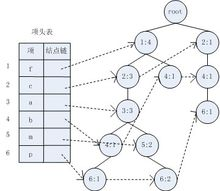
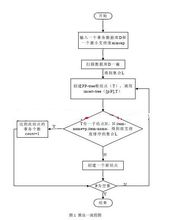

FP-Growth算法是韩嘉炜等人在2000年提出的关联分析算法，它采取如下分治策略：将提供频繁项集的数据库压缩到一棵频繁模式树（FP-tree），但仍保留项集关联信息。
- 中文名
- FP-Growth
- 外文名
- FP-Growth
- 全 称
- Frequent Pattern
- 属 性
- 数据结构
- 基本思路
- 不断地迭代FP-tree的构造和投影
- 好 处
- 比Apriori算法简单
FP-growth算法背景
编辑FP-growth提出背景
众所周知，Apriori算法在产生频繁模式完全集前需要对数据库进行多次扫描，同时产生大量的候选频繁集，这就使Apriori算法时间和空间复杂度较大。但是Apriori算法中有一个很重要的性质：频繁项集的所有非空子集都必须也是频繁的。但是Apriori算法在挖掘额长频繁模式的时候性能往往低下，Jiawei Han提出了FP-Growth算法。
FP-growth预备知识

FP-Tree结构图
[1]
条件模式基：包含FP-Tree中与后缀模式一起出现的前缀路径的集合
条件树：将条件模式基按照FP-Tree的构造原则形成的一个新的FP-Tree
FP-growth算法思想
编辑基本思路：不断地迭代FP-tree的构造和投影过程
算法描述如下：
2、对每个新构建的FP-tree重复这个过程，直到构造的新FP-tree为空，或者只包含一条路径。
3、当构造的FP-tree为空时，其前缀即为频繁模式；当只包含一条路径时，通过枚举所有可能组合并与此树的前缀连接即可得到频繁模式。
FP-growth算法描述
编辑构造FP-Tree
挖掘频繁模式前首先要构造FP-Tree，算法伪码如下：
输入:一个交易数据库DB和一个最小支持度threshold.
输出:它的FP-tree.
步骤:
1.扫描数据库DB一遍.得到频繁项的集合F和每个频繁项的支持度.把F按支持度递降排序,结果记为L.
2.创建FP-tree的根节点,记为T,并且标记为’null’.然后对DB中的每个事务Trans做如下的步骤.
根据L中的顺序,选出并排序Trans中的事务项.把Trans中排好序的事务项列表记为[p|P],其中p是第一个元素,P是列表的剩余部分.调用insert_tree([p|P],T).
函数insert_tree([p|P],T)的运行如下.
如果T有一个子结点N,其中N.item-name=p.item-name,则将N的count域值增加1;否则,创建一个新节点N,使它的count为1,使它的父节点为T,并且使它的node_link和那些具有相同item_name域串起来.如果P非空,则递归调用insert_tree(P,N).

FP-Tree创建的算法流程图
注：构造FP-Tree的算法理解上相对简单，所以不过多描述
挖掘频繁模式
对FP-Tree进行挖掘，算法如下：
输入:一棵用算法一建立的树Tree
输出:所有的频繁集
步骤:
调用FP-growth(Tree,null).
procedure FP-Growth ( Tree, x)
{
(1)if (Tree只包含单路径P) then
(2) 对路径P中节点的每个组合（记为B）
(3) 生成模式B并x，支持数=B中所有节点的最小支持度
(4) else 对Tree头上的每个ai，do
{
(5) 生成模式B= ai 并 x，支持度=ai.support；
(6) 构造B的条件模式库和B的条件FP树TreeB；
(7)if TreeB != 空集
(8)then call FP-Growth ( TreeB , B )
}
}
FP-growth演示图
编辑下图给出了整个算法的演示过程：

- 参考资料
-
- 1. FP-Tree演示图 ．百度图片[引用日期2012-10-30]
- 学术论文
-
- 一种基于FP—Growth的改进算法． 《 河南城建学院学报 》 ， 2008
- 基于FP－Growth算法的盾构掘进参数与隧道管片渗漏关联性分析． 《 隧道建设 》 ， 2016
- 改进的FP-growth关联规则算法及其在图书推荐系统中的应用． 《 微型电脑应用 》 ， 2014
- 一种基于FP-Growth的频繁项目集并行挖掘算法． 《 计算机工程与应用 》 ， 2014
- Identifying Relationship between Hearing loss Symptoms and Pure-tone Audiometry Thresholds with FP-Growth Algorithm． 2013
- 查看全部